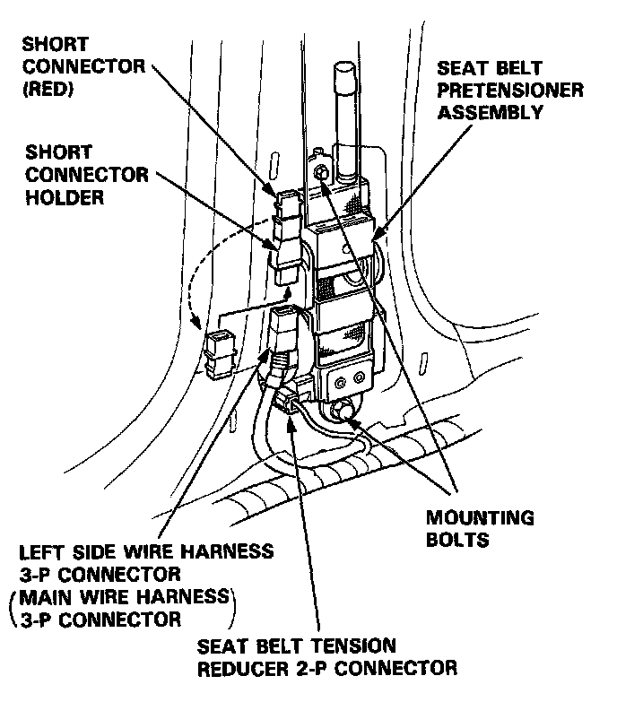
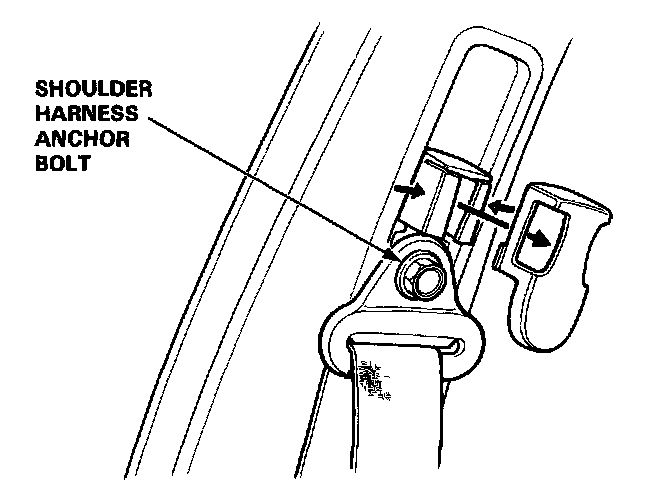
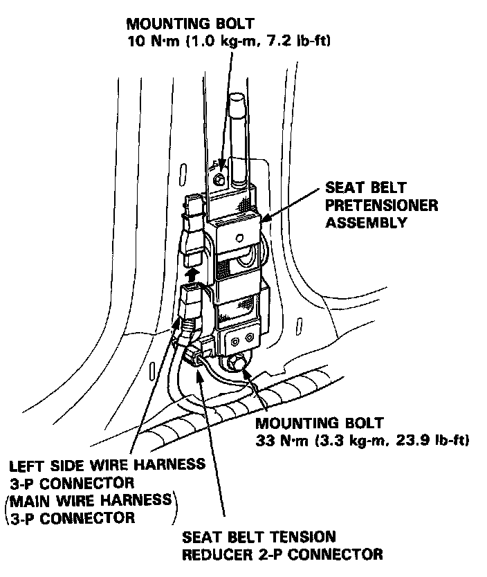
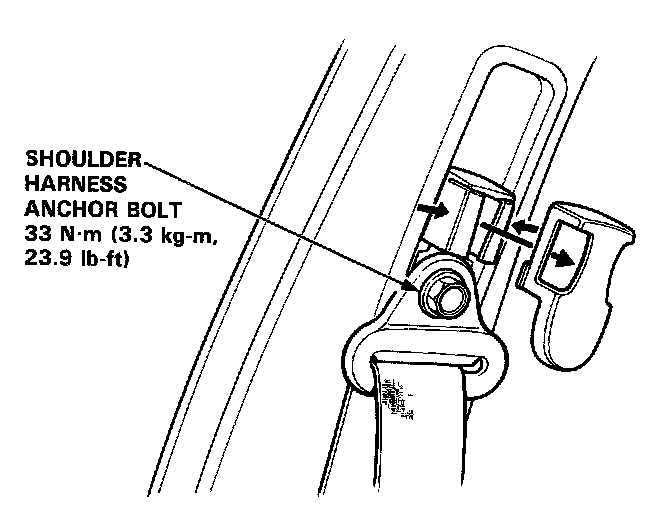
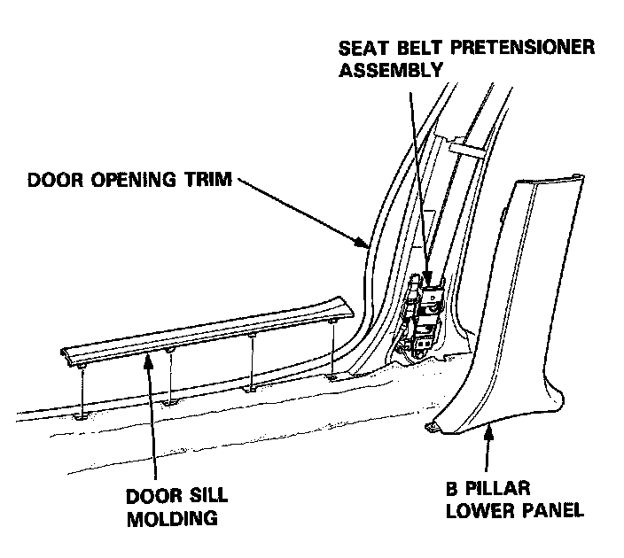

Seat Belt Pretensioner Replacement
Seat Belt Pretensioner Replacement
CAUTION:
- Do not install used SRS parts from another car: use only new SRS parts.
- Carefully inspect the seat belt pretensioner before installing it. Do not install a pretensioner that shows signs of being dropped or improperly handled, such as dents, cracks or deformation.
- The shoulder harness anchor bolt must be removed before you remove the pretensioner.
- After completing repair work, be sure to remove SRS short connector A.
NOTE (L and LS models): Before disconnecting the battery cables, be sure you get the customer's anti-theft radio code number.
1. Before disconnecting any part of the SRS wire harness, disconnect both the negative and positive battery cables. Then install the short connectors - refer to "Short Connector Installation" procedure.
2. Remove the "B" pillar trim panel.
3. Disconnect the 3-P connector from the seat belt pretensioner, then disconnect the 2-P connector from the tension reducer.

4. Remove the shoulder harness anchor bolt, then remove the two seat belt pretensioner mounting bolts and pretensioner.

CAUTION: Be sure to install the harness wires so that they are not pinched or interfering with other parts.
5. Install the new seat belt pretensioner.

6. Reinstall the shoulder harness anchor bolt.

7. Remove the short connectors (RED) from the seat belt pretensioners, then attach them to their holders.
8. Reconnect the left side wire harness 3-P connector to the driver's seat belt pretensioner and the main wire harness 3-P connector to the front passenger's seat belt pretensioner.
9. Reconnect the left side wire harness or the main wire harness 2-P connector to the tension reducer connector.
10. Reinstall the "B" pillar lower panel, door opening trim, and door sill molding.

11. Remove the short connectors from the front passenger's airbag connector and from the SRS main harness connector.
12. Reconnect the front passenger's airbag 3-P connector to the SRS main harness connector.
13. Remove the short connectors from the driver's air- bag connector and from the cable reel 3-P connector.
14. Reconnect the driver's airbag 3-P connector to the cable reel 3-P connector. Attach the short connector (RED) to the access panel, then reinstall the panel on the steering wheel.
15. Reconnect the battery positive cable, then the negative cable.
16. After installing the SRS unit, confirm proper system operation: Turn the ignition ON (II):
- The instrument panel SRS indicator light should go on for about six seconds and then go off.
- Make sure the seat belt retractor and tension reducer work.
17. Enter the customer's code number to restore radio operation.